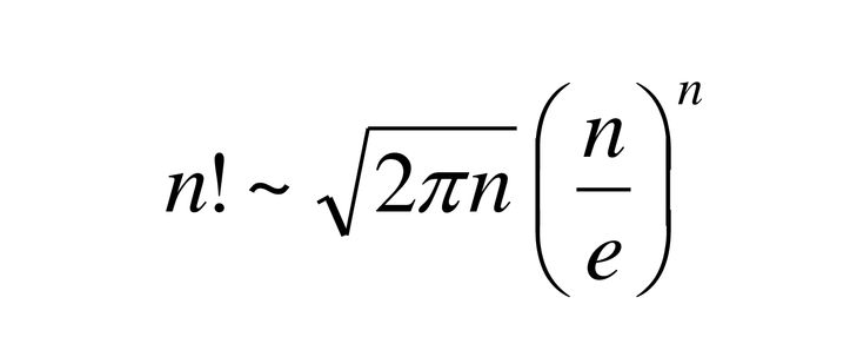

Stirling's Approximation
Stirling's approximation is a mathematical formula that provides an approximation for the factorial of a positive integer. It can be expressed as:
n! ≈ √(2πn) * (n/e)n
Where n! represents the factorial of n, and e is the base of the natural logarithm.
Explanation:
Stirling's approximation provides an estimation for the factorial function n! as the value of n gets larger. It is particularly useful for simplifying calculations involving factorials in various mathematical and statistical contexts.
The approximation involves the square root of 2πn, where π represents the mathematical constant pi. The term (n/e)n involves the ratio of n to the base of the natural logarithm e. By combining these factors, Stirling's approximation provides a close approximation to the actual value of n! for large values of n.
